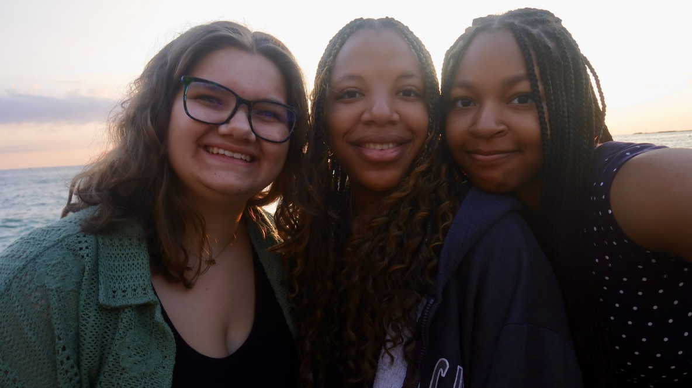

My Home Page

About Me
I am a curious and fun person who loves making new friends!
My Hobbies and Interests
- I am very intrested in playign volleyball! I am on my school's varsity team and play club volleyball during the off-season.
- I enojy reading books but I wish I read more than I do now. Recnelty I have been reading a lot of romance novels. Soon I hope to discover new genres and be more adventurous.
- I love spending time with my family and friends. Going anywhere with them always gives me something to look foward to throughout the day! My favorite thing to do with them is have sleepovers.
My Favorites
- Favorite food: Pizza, Quesadillas, and Chocolate
- Favorite movies: The Grand Budapest Hotel, While You Were Sleeping, and Clue
- Favorite music: Any song by Laufey
- Favorite place: Anywhere my friends are
Fun Facts
- I have lived in Chicago all my life.
- My team has won a city championship for volleyball.
- I worked at the Shedd Aquarium last summer!
My Goals
Right now, I am focused on volleyball and having the best season possible! Aside from that, I am trying to focus on college applications and schoolwork. I have not done the best job at turning in work on time or focusing on my studies, so my main goal is to improve my time management and study habits.